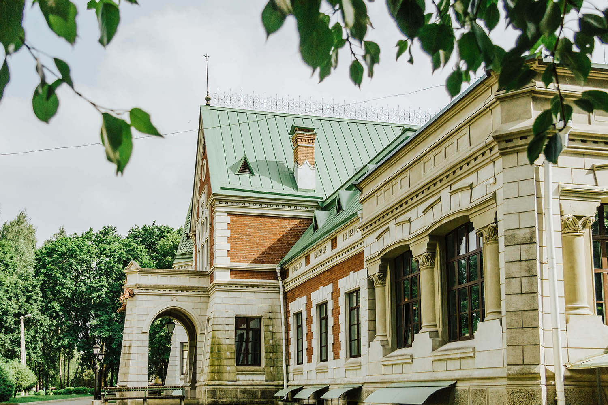

история агрогородка
В 1528 году местный помещик Алексей Зенькович продаёт свои деревянные строения другому помещику. Вот из этих письменных источников точно известна деревня Красный Берег, которая в то время входила в Речицкий уезд Минского воеводства Великого княжества Литовского. После Зеньковича хозяевами Красного Берега были Солтаны, Воронецкие, Фомины, Гриневичи, Богородские, Гатовские, Поклевские-Козелл. В 1654 году на долю жителей Красного Берега выпали жестокие испытания. Окрестные деревни, в том числе и Красный Берег, почти совсем исчезли.
16 (28) ноября 1873 года первый поезд прошел через станцию Красный Берег из Бобруйска до Гомеля.
В 1889 году уже генерал-лейтенант Михаил Семенович и его жена дворянка Мария-Юзефа Гатовская владели имением Красный Берег в Степской волости в 847 десятин земли. В это время по проекту русского архитектора Виктора Шрётера, который окончил Санкт-Петербургскую академию искусств, затем берлинскую Академию художеств был построен дворец (1893г.). Одновременно с возведением дворца рядом с ним был разбит "английский парк" пейзажно-регулярного типа по проекту знаменитого варшавского садовода Франтишека Шаниора, который садово-парковому искусству учился во Франции, а в Варшаве был ответственен за сад и парк королевского дворца.
После смерти Гатовского Михаила Семеновича (11.06.1904) имение Красный Берег Бобруйского уезда было переписано на имя дворян Гатовских и усадьба Красный Берег перешла к мужу Гатовской Марии, Викентию Альфонсовичу Поклевскому-Козелл.
В 1905 году революционная ситуация в России отозвалась в Красном Береге желанием ограбить барскую усадьбу. Эти попытки местных крестьян остановили казаки, которые оперативно прибыли из Бобруйской крепости.
После революции 1917 года имение в Красном Береге было национализировано. В августе 1920 года Народный комиссариат земледелия Республики Беларусь постановил сделать на базе помещичьего имения Красный Берег Бобруйского уезда нижнее сельхозучилище I степени, в которое переехали ученики из Озаричской и Бобруйской сельскохозяйственных школ.
В деревне Красный Берег в 1930 году был образован совхоз "Красный Берег", в деревне Краснобережская Слободка и на станции Красный Берег - колхоз "Красный коммунар".
В конце 20-х годов XIX века в Красном Береге начались большие стройки:
В конце 20-х годов XIX века в Красном Береге начались большие стройки:
- на улице Кооперативной в конце 20-х годов начала работать повидловарка, которая в 30-х годах была переименована в вареньеварочный завод.
- на берегу Добасна в сентябре 1931 года начал работать крахмальный завод под № 2, к которому был проложен железнодорожный путь. Первоначально здесь работал 41 человек.
- в июле 1936 года в конце улицы Кооперативная, расположилась база хранения горючего. К ней от станции был проложен железнодорожный путь.
- в 1936 году между крахмальным заводом и железной дорогой было построено новое здание 7-летней школы.
С 14 августа 1937 года деревня является центром Краснобережского с/с Жлобинского района и 15.01. 1938 года Красный Берег вошел в состав Гомельской области.
Деревня Красный Берег была занята фашистами 5 июля 1941 года и освобождена 25 июня 1944 года. За три года оккупации в небольшой деревушке фашисты создали в районе железнодорожного вокзала один из крупнейших пересыльных пунктов Гомельской области, а также огромный госпиталь для лечения солдат и офицеров. В 1943 году по приказу Гитлера в деревне Красный Берег создается один из пяти детских донорских концлагерей для детей - полных доноров. Через пересыльный пункт Красный Берег прошло более 15 тысяч человек, из них 12 тысяч - это дети до 15 лет.
В 60-70-х годах в деревне была военная часть № 55461, крахмало-паточный завод (крахмальных заводов в Беларуси много, а крахмало-паточный единственный), вареньеварочный завод, цех первичной переработки молока, хлебопекарня, 2 совхоза: "Краснобережский" и "Совхоз-техникум", лесничество, мощная электроподстанция, железнодорожная станция, 4 продовольственные магазины, 2 магазина хозяйственных изделий, 2 промтоварные магазина, обувной, книжный, 3 столовые, 2 небольшие буфета. В социальную структуру деревни входили сельскохозяйственный техникум, средняя и музыкальная школы, библиотека, 3 детских ясли-сада, Дом культуры, два отделения связи, аптека, 4 кинотеатра. Раз в месяц приезжали вагон-лавка и вагон-клуб.
К 1962 году в состав Краснобережского с/с входили поселок учхоза "Красный Берег", поселок железнодорожной станции "Красный Берег" - Пристань, поселок Новый Александрия, хутора Приречье, Рассвет, Тёсы, Кадище. 15 октября 2009 года деревня Красный Берег зарегистрирована как агрогородок.
29 сентября 2013 года первый электропоезд в истории Гомельской области проследовал с Минска через станцию Красный Берег на Жлобин.
Краснобережский усадебно-парковый комплекс
Основные строения усадьбы Красный Берег трактовались автономно: в неоготике – въездные ворота, в неоренессансе – флигель, в модерне – дворец с его «готическим» вестибюлем и неорокайльным интерьером боковой гостиной. Огромное здание впечатляет не только необычной пространственной компоновкой, но и изобретательным подходом к архитектурному декору. Формирование развитой объемно-пространственной композиции обусловлено не стихийностью, а последовательностью развития здания изнутри наружу, исходя из наиболее рационального и функционально обусловленного построения внутреннего пространства. Композицию здания характеризует разнообразие объемных элементов, усложненность и многоплановость их компоновки, живописность силуэта, богатство цветной и светотеневой моделировки, пластичность и выразительность преимущественно готических архитектурных форм.
Дворец неоднороден по объемному построению и нерегулярной плановой организации. Решен двухэтажным объемом с двумя башнями, ризалитами, аркадным входным крыльцом, а также пристроенным одноэтажным крылом. Массивность здания подчеркивает крупный руст и каменно-блочная кладка, а его пластичность — ломаная «французская» крыша. При декорировании используются не только готические элементы, но и заимствованные из эпохи Ренессанса. Живописность строению придает натуральный цвет кирпичной кладки, на фоне которой выделяются светлые, выложенные из песчаника элементы декора – башни, наличники окон, профилированные карнизы. Как и большинство модернистов, Е. Шретер не смог полностью отказаться от использования исторических стилей: в частности готики, используя стрельчатые проемы, контрфорсы и химеры на водостоках. Но эклектичное разнообразие стилей эпохи определилось в художественной трактовке интерьеров коридорно соединенных комнат дворца (универсальная анфилада отходит в прошлое), его романского, готического, китайского, рокайльного и арабского залов. Арабский зал обставлен экзотической мебелью, инкрустированной перламутром и слоновой костью их Дамаска, а также персидскими коврами. Бальный зал был решен в стиле Людовика XVI, в будуаре – настенные люстры в разных рамах, художественное оформление залов было выполнено А. Боровским. Кроме стилевой мебели дворцовые интерьеры значительно обогащали изделия из бронзы (фирма Лапенских), венецианский хрусталь, английский фаянс и наибогатейшая галерея портретов, где были картины Г. Семирадского, копии Караваджо, Айвазовского и многих других.
Во время строительства дворца паркостроителем Франциском Шанером был высажен новый парк в английском пейзажном стиле, за ним плодовый сад и фазановая ферма. Сетка дорожек и окружной прогулочный маршрут разделяли парк на несколько зон: плодовый сад, пейзажный ландшафт западной части, куртины вокруг дворца и по берегам реки, открытые газоны, пруды, беседки. Из сада через парк к реке проложен канал с 3 мостами. В создании парковых куртин использовались преимущественно хвойные породы деревьев: ель обыкновенная, лиственница европейская, пихта сибирская; из лиственных – липа, каштан, дуб красный, и другие. В подбивке древесных куртин использовались сирень, спирея и др. Много экзотических деревьев: ель красная, орех грецкий, липа американская, крымская и крупнолистная, клен серебристый, бархат амурский, сосна веймутова. Группы сочетали вечнозеленые и листопадные виды, подобранные с учетом окраски листьев в течение сезона. К резиденции ведет подъездная аллея, которая доходит до каменных ворот готического стиля – стрельчатая въездная арка фланкирована 8-гранными башенками, ворота освещались огромным фонарем. Мощный хозяйственный комплекс с винокурней, конюшнями, амбарами, оранжерейно-парниковым хозяйством был вынесен за пределы репрезентабельной части усадьбы. Кирпичные хозяйственные постройки также решены в формах готики со ступенчатыми контрфорсами, стрельчатыми окнами. Памятник усадебно-парковой архитектуры республиканского значения.
Усадьба площадью 10 гектаров расположена над рекой Добысна и возведена по проекту профессора архитектуры Петербургской академии художеств Евгения Шретера. Резиденция включала дворец, флигель, хозяйственный комплекс, парк с садом, окруженные каменной оградой (высота 2,5м) с воротами и березово-липовыми аллеями. Хорошо сохранились и дворец с десятками комнат и флигель на территории помещичьей усадьбы, и другие хозяйственные постройки. Сам дворец представляет собой двухэтажную кирпичную постройку асимметричной композиции, сооруженную в так называемом стиле «историзма» с использованием элементов готики, ренессанса, ампира и модерна. В первой половине XIX века имение было собственностью рода Богородских, которое потом выкупил генерал-лейтенант инженерии Михаил Готовский. Через его дочь, как приданое, оно перешло к Викентию Козел-Поклевскому, наследнику огромной собственности на Урале и в Сибири, созданной неустанными трудами его отца, миллионера-предпринимателя, общественного деятеля, мецената и благотворителя Альфонса Козел-Поклевского, уроженца Лепельщины.
После революции 1917 года представители рода Козел-Поклевских эмигрировали за границу, имение было национализировано и на его базе в 20-х годах прошлого века организовано сельскохозяйственное училище (ныне Краснобережский государственный аграрно-технический колледж). В 2003г. Краснобережский усадебно-парковый комплекс был включен в Государственный список недвижимых материальных историко-культурных ценностей Республики Беларусь, имеет статус ценности второй категории, входит в «Золотое кольцо Гомельщины». С 1993г. на здании усадебного дома начали проводить реставрационно-строительные работы. После реставрации в здании планируют разместить две музейные экспозиции, а также картинную галерею. Предстоит восстановить флигель и сам парк. И хотя работы продолжаются, комплекс и сегодня вызывает восхищение.

Мемориальный комплекс «Красный Берег»
/01.jpg "галерея(нажмите для просмотра)")
Мемориальный комплекс «Красный Берег» состоит из двух частей. На первом плане – бронзовая фигура девочки-подростка. Поднятыми над головой тонкими руками, она как будто защищается от всех ужасов войны. На лице боль, беззащитность и беспомощность. Скульптуру характеризует своеобразная, динамичная пластика, ее ломаный силуэт передает внутреннее напряжение. За спиной девочки – пустой учебный класс. Ровные шеренги белых парт (три ряда по пять парт), на черной школьной доске полностью воспроизведено письмо отцу Кати Сусаниной, которая стала прообразом скульптуры девочки.
Вторая часть композиции называется «Площадь солнца». Центральный образ – белый парус бумажного кораблика, на котором воспроизведены имена детей. Парусник в окружении детских рисунков, изображенных в виде витражей в белых рамах. В основу витражей положены настоящие рисунки детей, сделанные после войны в детской изостудии Сергея Каткова. Их предоставила и обработала его дочь – художница Светлана Каткова. В белых рамах расположены также увеличенные почти до монументальных размеров фигурки, вылепленные из пластилина детьми Краснобережского детского дома. Скульптор М. Петруль перевоплотил пластилиновые фигурки в монументальные произведения. Мемориал разделен лучами-аллеями, выложенными разноцветными плитками. Каждая деталь комплекса аллегорическая и символична. Парты, витражи для рисунков выполнены из белого бетона. Комплекс расположен среди огромного яблоневого сада, вокруг высажены молодые деревца.